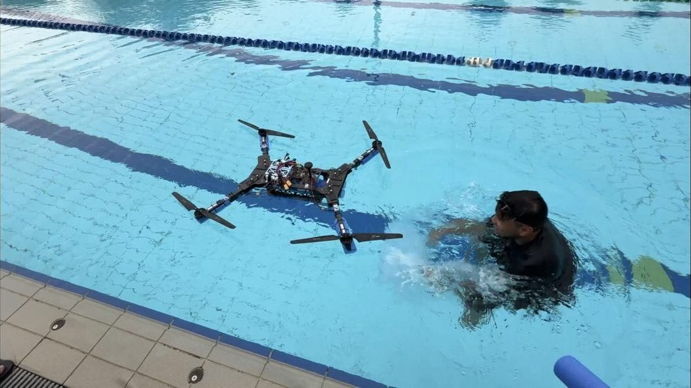

The team
MARVL is the Multi-Agent Robotics Vision and Learning Lab at the Singapore University of Technology and Design. RobotX 2026 is a lab-wide project covering the software, three vehicle builds and the safety documentation.
Who we are
MARVL works on mobile robotics, multi-robot coordination, planning and scheduling, computer vision and machine learning, with field robotics on marine, ground and aerial platforms. The lab has operated surface and underwater vehicles in Singapore waters for several years. RobotX 2026 is the first time the lab has run all three domains together as one system.
The competition entry is a student team under the RoboNation eligibility rules: at least three quarters of the members are full-time students, and students do the engineering. Staff and alumni advise.

How the team is organised
Two leads run the project under the faculty advisor. The work is split into nine groups, and most members are in more than one, because much of the work crosses group boundaries: a detector has to feed the planner, and a controller has to be checked in simulation first. All of the groups deliver into the ground station, which is the one piece of software that talks to all three vehicles and to RoboCommand.
Simulation
The ArduPilot software in the loop fleet, the HaLow link emulator, the Marina Bay course model and the scripted validation run.
Computer vision
Buoy, beacon, pipeline and docking bay detection, camera work on the ROV and the aircraft, and the datasets behind them.
Planning
Mission orchestration, the task state machines, checkpointing and the Task 4 interruption handling.
Control
Autopilot configuration and tuning on all three vehicles, guided and depth hold modes, and the failsafes.
Electronics
Power, the kill switch chain, the status lights, payload wiring and the companion computers.
Communication
The WiFi HaLow link, the RoboCommand client, RF declarations and the network on the course.
Design documentation
The technical design report, this website and the proof of readiness packages.
UAV
The airframe build, flight testing, the delivery mechanism, pilot licensing and the airworthiness case with CAAS.
UUV
BlueROV2 integration, depth control, the magnetic probe and the pipeline survey.
Members
Twenty six students and one advisor. Each name is listed under every group the member works in, so some names appear more than once.
Faculty advisor
Prof. Malika Meghjani
Directs the entry, is the airworthiness contact, and leads the MARVL lab.
Team lead
A. Praveen Manicka
Planning.
Team lead
Siddhant Shrivastava
Simulation, computer vision and communications.
Simulation
- Siddhant Shrivastava
- My Vo
- Weiyew Sim
Computer vision
- Siddhant Shrivastava
- Minh Long Pham
- N. Kandula
- Jiawei Xu
- Gregory Wong
- Kunal Kumar Senthilkumar
- Weiyew Sim
- Christopher Quah
Planning
- A. Praveen Manicka
- N. Kandula
- Weiyew Sim
- Minh Long Pham
Control
- Junjie Hoo
- Divyesh Saraf
- N. Kandula
- Gregory Wong
- Kunal Kumar Senthilkumar
Electronics
- Marcel Prasetyo
- Xinyang Goh
- Divyesh Saraf
- Hongqing Zhao
Communication
- Siddhant Shrivastava
- My Vo
- Jiawei Xu
- Gregory Wong
- N. Kandula
Design documentation
- My Vo
- N. Kandula
- Kunal Kumar Senthilkumar
UAV
- Dylan Soh
- Mufaddal Murtuzatopiwala
- Suryanarayanan Sandhanam
- Marc Choo
- Jacelyn Lee
- Philip Yeo
UUV
- Kaustubh Singh
Members
Not yet assigned to a group.
- Lucas Pang
- Justen Ong
- Joey Teoh
- Anson Poh Chin Siang
Faculty advisor and lab: MARVL, Singapore University of Technology and Design.
Sponsors and support
Three organisations support this entry. The logos below are placeholders until the official files are added.
Singapore University of Technology and Design
Host university. Workshop and pool access, field time, shipping and staff support for the safety documentation.
MARVL Lab
Host lab. Vehicles, test equipment and marine robotics experience.
Blue Robotics
BlueBoat and BlueROV2 platforms through the RobotX granted platform programme, with spares and thruster support.
Supporting the team
We are looking for support in three areas for the 2026 season: field time and boat cover in Singapore waters, components for the delivery mechanism, and travel for the event week in November. Contact us at the address below.
Acknowledgements
In addition to the three sponsors, the following people and groups have supported the entry this season.
- Prof. Foong Shaohui, MRS Lab, SUTDFor his support of the team this season.
- SOAR, the SUTD Organisation of Autonomous RoboticsThe SUTD student robotics club, for supporting the entry.
- UWU, the UnderWater UnitThe SOAR student team that competes in the Singapore AUV Challenge, for its part in the surface vehicle testing.
- RoboNationFor publishing the RoboCommand schema and the rc-test server used to check the communications submission.
Contact
- TeamMARVL, team id SUTD
- InstitutionSingapore University of Technology and Design
- Emailmarvl-robotx@sutd.edu.sg
- Address8 Somapah Road, Singapore 487372
- Codegithub.com/MARVL-Research-Lab
Editor note, remove before submission
Confirm the contact address above. It is the only address on the site, so it has to be a mailbox that somebody reads.